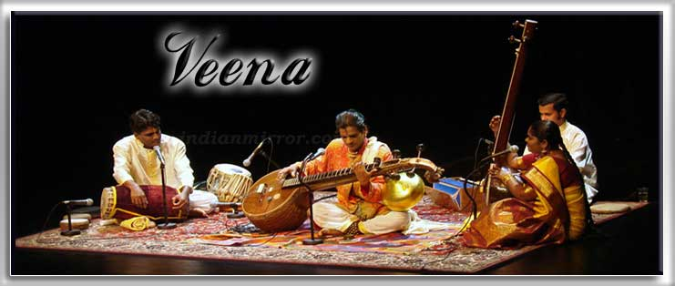

Carnatic music, Karnāṭaka saṃgīta, or Karnāṭaka saṅgītam, is a system of music commonly associated with southern India, including the modern Indian states of Karnataka, Andhra Pradesh, Telangana, Kerala, and Tamil Nadu, as well as Sri Lanka.[1][2] It is one of two main subgenres of Indian classical music that evolved from ancient Hindu traditions, the other subgenre being Hindustani music, which emerged as a distinct form because of Persian or Islamic influences from Northern India. The main emphasis in Carnatic music is on vocal music; most compositions are written to be sung, and even when played on instruments, they are meant to be performed in gāyaki (singing) style. Although there are stylistic differences, the basic elements of śruti (the relative musical pitch), swara (the musical sound of a single note), rāga (the mode or melodic formulæ), and tala (the rhythmic cycles) form the foundation of improvisation and composition in both Carnatic and Hindustani music. Although improvisation plays an important role, Carnatic music is mainly sung through compositions, especially the kriti (or kirtanam) – a form developed between the 14th and 20th centuries by composers such as Purandara Dasa and the Trinity of Carnatic music. Carnatic music is also usually taught and learned through compositions. Carnatic music is usually performed by a small ensemble of musicians, consisting of a principal performer (usually a vocalist), a melodic accompaniment (usually a violin), a rhythm accompaniment (usually a mridangam), and a tambura, which acts as a drone throughout the performance. Other typical instruments used in performances may include the ghatam, kanjira, morsing, venu flute, veena, and chitraveena. The greatest concentration of Carnatic musicians is to be found in the city of Chennai.[3] Various Carnatic music festivals are held throughout India and abroad, including the Madras Music Season, which has been considered to be one of the world's largest cultural events.[4][5]
List of famous Carnatic Musicians